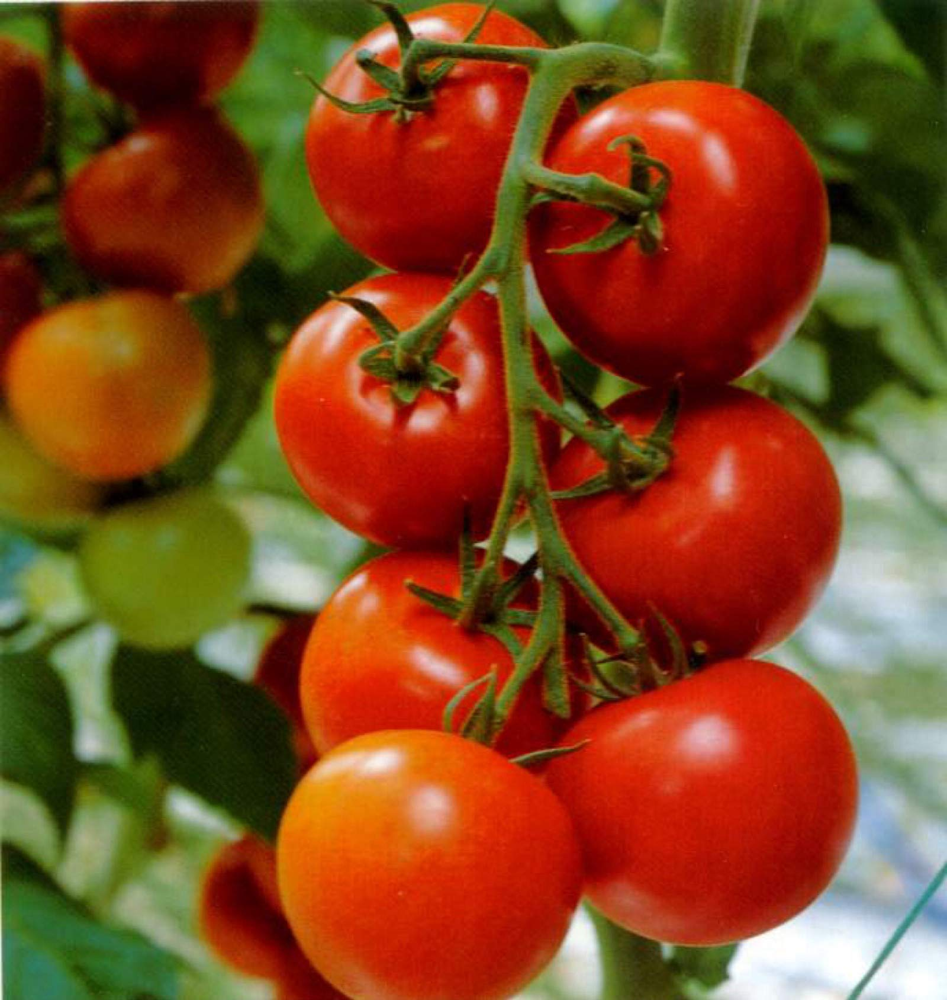
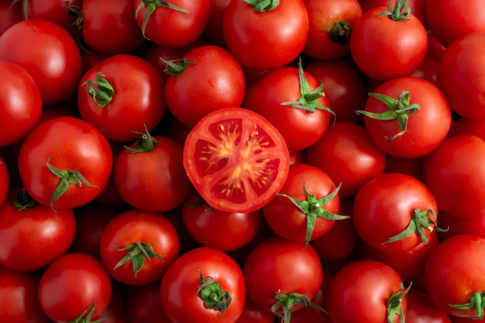

Type: Hybrid variety
Where it is grown: Tamil Nadu, Karnataka, Andhra Pradesh, Maharashtra (irrigated)
About: Semi-determinate, medium-tall plants. Fruits are round, smooth, deep red, and ideal for long-distance transport. High yielding and tolerant to bacterial wilt and leaf curl. Popular for market and processing.

Type: Open-pollinated (IARI, New Delhi)
Where it is grown: Tamil Nadu, Karnataka, Uttar Pradesh, Bihar, Madhya Pradesh
About: Early-maturing (120–125 days). Fruits are small to medium, red, smooth-skinned. Great for table use, salads, chutney, and cooking. Resistant to leaf curl virus and suitable for rainfed and irrigated conditions.

Type: Traditional / Local (Open Pollinated)
Where it is grown: Tamil Nadu – Madurai, Theni, Dindigul, Salem, Coimbatore, Tirunelveli, Villupuram. Also found in home gardens and kitchen gardens across South India.
About: Medium height, hardy, well-suited for tropical climate. Small, round, slightly flat, thin skin, deep red when ripe. Sour-tangy flavor, stronger than hybrids.